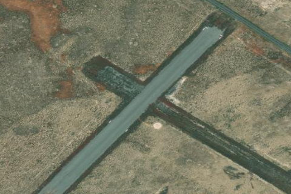

Midway, ID

Aerial imagery source: Esri, Vantor, Earthstar Geographics, and the GIS User Community
| Elevation | 5,017 ft |
|---|---|
| CTAF | 122.9 |
| Coordinates | 43.45586, -112.805081 |
Notes
[shortfield] Location Overview: Midway Airstrip (U37) sits about one mile northeast of Atomic City, Idaho, on roughly 30 acres of high desert at a surveyed elevation of 5,017 feet. The strip lies in the flat sagebrush plain of the Snake River Plain, near the Idaho National Laboratory site, with Craters of the Moon National Monument and the town of Arco within easy driving distance to the west. Camping & Recreation: There are no developed camping facilities at the airstrip itself, and it sits in a sparsely populated stretch of desert (Atomic City's population is only around 40 people). For recreation, the closest and most notable draw is Craters of the Moon National Monument, roughly 46 miles away, which offers tent sites and a limited number of no-hookup RV-friendly sites, along with hiking to Big Craters, the Broken Top Loop, and Wilderness Trail, plus permitted cave exploration. History-minded visitors often pair a stop here with the EBR-I Atomic Museum, a decommissioned reactor turned National Historic Landmark a short drive away, open seasonally from Memorial Day through Labor Day. Notes & Warnings: The single runway (2/20) is 3,800 by 175 feet of gravel in fair condition, with the first 1,500 feet of Runway 2 soft due to a mix of dirt and crushed red lava rock. Heavy sagebrush up to 8 feet tall borders the final approach to Runway 20, with 5-foot sagebrush along both runway edges, and a low dirt road parallels the runway close to centerline, occasionally used by RV trailers and farm equipment. There is no winter maintenance, no fuel or airframe/powerplant services on field, and the airport is unattended with no control tower — traffic is self-announced on CTAF 122.9. There are no published instrument procedures, so it's VFR-only, and pilots should watch for gusty high-desert winds typical of the Snake River Plain. History: Atomic City's airstrip carries the name of the town's original identity: until 1950, the settlement was called "Midway," because it sat halfway between the towns of Arco and Blackfoot. The strip has been in service since its activation in October 1947, predating the nuclear-era renaming of the town. That renaming came as the area rose to prominence with the nearby National Reactor Testing Station (now the Idaho National Laboratory), where construction began in 1949 on the Experimental Breeder Reactor-I, which in December 1951 became the first reactor to generate usable electricity from nuclear power. By 1955, Arco became the first community in the world lit by nuclear-generated electricity, cementing the region's "Atomic" identity — and leaving the old outpost of Midway to become the quiet, sagebrush-ringed ghost town and backcountry airstrip known today as Atomic City.